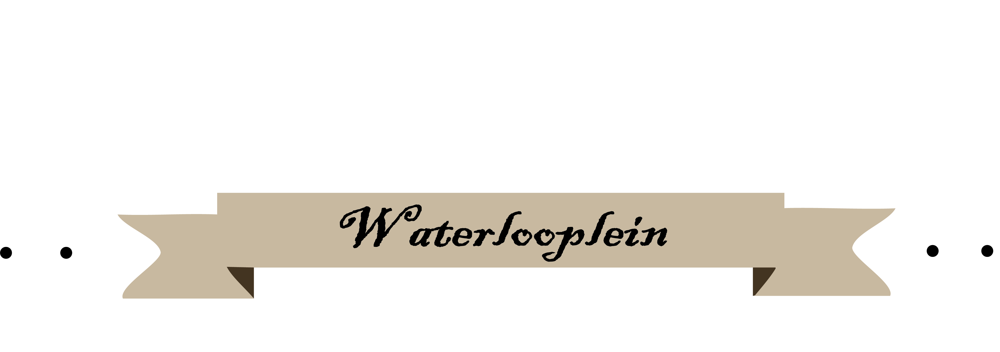
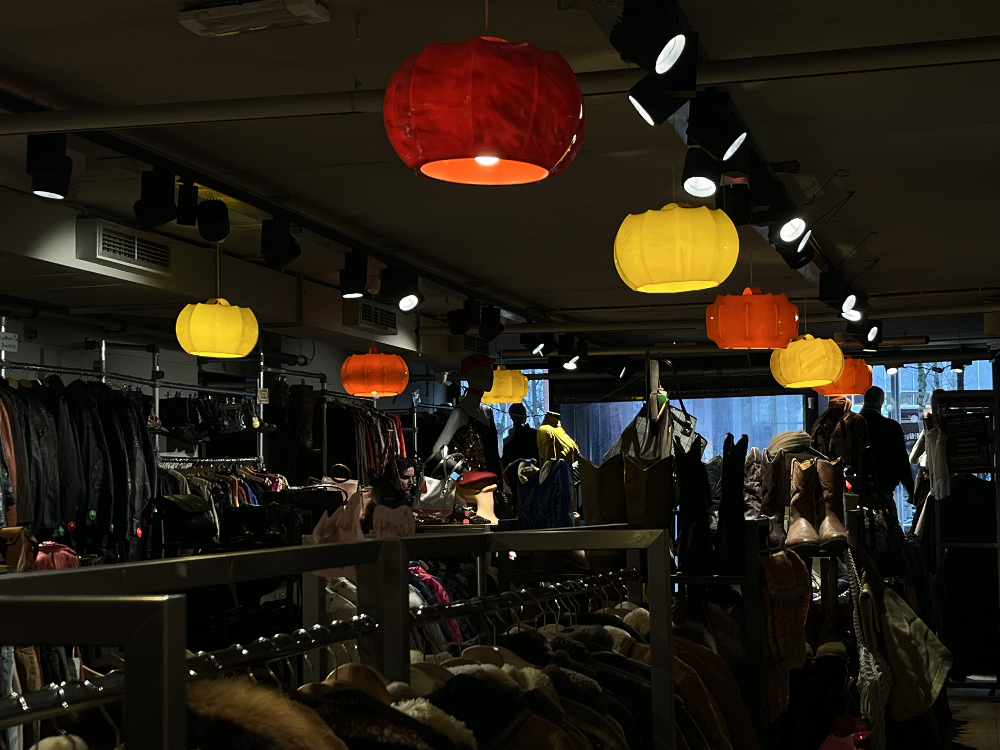
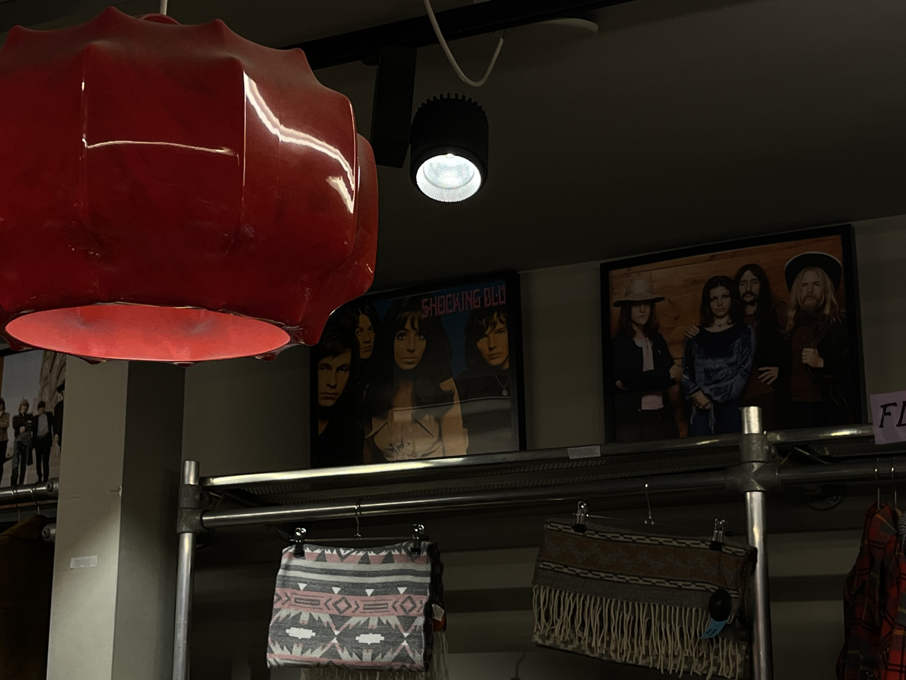
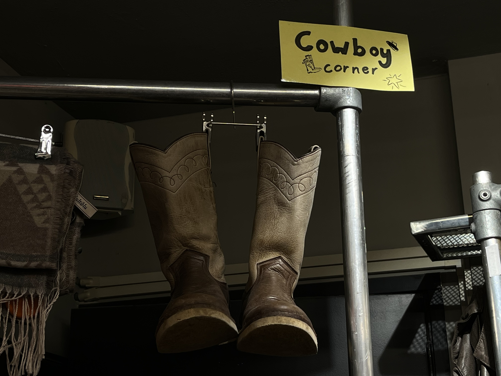

The Kilo Store




Find. Weigh. Pay
About Us
Welcome at the Kilo Store, the ultimate vintage shop for high quality clothes with affordable prices! This store offers clothes inspired by the 60s, 70s and 80s. The products consist of leather jackets, dresses, trench coats and much more. The Kilo Store focuses on offering vintage clothes per kilo to let their customers find a wide range of clothes without draining their bank accounts!